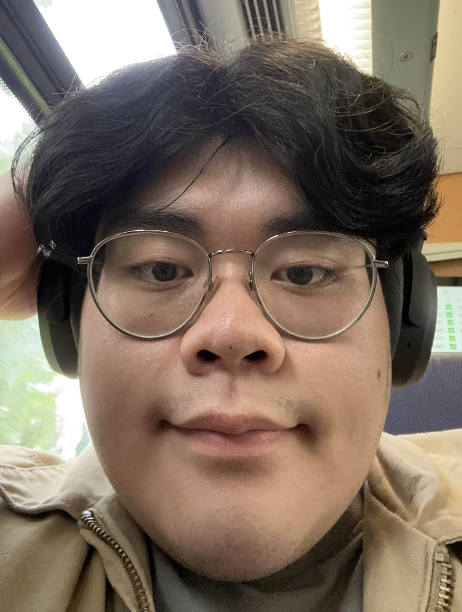

Som multimediedesigner stræber vi efter at visualisere idéer og koncepter som hermed skabes en unikhed og autenticitet for dit produkt
Mit navn er Hoang-Long Dang, men jeg bliver bare kaldt Long. Jeg er 22 år og har boet i Svendborg lige siden jeg var 3 år. Jeg er oprindeligt født i Vietnam og dér har jeg boet med mine forældre indtil jeg var 3 år gammel. Mig og mine forældre flyttede herefter til Svendborg, Danmark.
Jeg har altid elsket at arbejde med noget visuelt og kreativt der sammenspiller, hvilket hermed har givet mig en interesse for bl.a. fotografi og videografi. Jeg har freelancet med videoredigering og billederedigering for danske youtubere, som har sat fundamentet for min interesse i bund. Jeg har også senere fundet kodning og website design spændende.